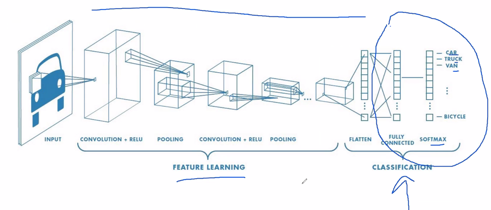
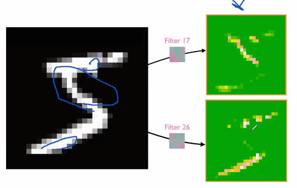
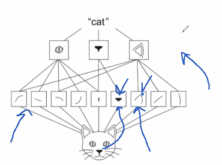

7 Chapter 5 - Deep learning for computer vision
This section deals with convoluted networks, its structure and some examples.
Computer vision = image recognition.
Summary
We have seen the following so far:
- Densely connected network, that is where each neuron in each layer is tied to all neurons in adjacent layers.
We are now going to look into another structure.

We see that the part encircled with blue is what we have covered so far. Now we extend it in the previous steps with the convoluted network.
7.1 Definition of convoluted network
We also call the convoluted network convnet. As we have seen earlier the whole picture was used for analysis. That has it’s downsides that the model had to learn the patterns of the whole pictures. With convoluted networks, we specify a range (a patch) (equivilant to subset) of the pictures that are individually going to evaluated. This will not work with a densely connected network, hence one will connect neurons of inherited of different subsets of the pictures.
Note that each patch can be placed in any location as long as the borders are inside of the picture, but they will be overlapping, there is a solution to this in section 7.2.2.1.
Key take-aways
- convnets is the best tool for image classification
- They work as a whole hierarchy of modular patterns
- Each layer can be interpret and is not a black box as neural networks easily gets to be
Terms:
Input: is the input data
Filter/kernel: can be seen as weights. These are tuneable. This is applied in the way, that the filter is kinda changing how we view the input, so it can help ‘illuminate’ patterns, that we did not initially see, hence we can tune this with back propagation. Example of the feature map given two different filters:
- 
Feature map: Can be seen as the the output, where we extract patterns, hence this highlights important filters.
7.2 Spetial heirarchical
We want to first be able to specify regions and then extract what we can get from each patch.

7.2.1 Tuning parameters
- Size of the patches, typically 3 x 3 or 5 x 5.
- Depth of the output feature map, see the picture below.
Figure 7.1: How convnet works
What is it we see?
- The input shape, in which we are going to run the transformation
- We see the patches
- We see that we compute the dot products (given the certain filters) and stores them as the output feature map. Notice that we lost the outer-most cubes. That is because we cannot go outside of the input feature map, this is solved by the padding.
7.2.2 Data modeling techniques
The following presents different approaches options to the layers that will model with the data / affect the output.
7.2.2.1 Padding
We see from the output feature map that we lost some of the data. This can be solved with padding, here we are adding some padding around the original feature map so we are able to have an equal amount of patches for each of the pixels in the input feature space.
To explain it more visually, we see that at the borders of the pictures we will not be able to center the patches at the borders.
To deal with this use layer_conv_2d where one can set padding to either valid or same, where same will get the output to be the same size as the input (hence adding padding) and valid not apply padding.
7.2.2.2 Strides
This is referring to how much we move the patches around, the default is 1, but sometimes one will also use higher strides, for example 2, see the figure below. Where we see that we only are able to find 4 patches.
Figure 7.2: Example with strides, where stride = 2 x 2
This is in contrast to the normal scenario where we see that we are moving the patches around.
Figure 7.3: Example with strides, where stride = 1 x 1
We say that this has no strides, but in fact the stride = 1 x 1.
Why use the max-pooling operations?
It is a good approach to summarize the output layers and extract actual information.
Remember that the last layer will be a densely connected network
7.3 The max-pooling operation
It is similar to the strides in the way that you select a given patch of the output network, (see Section ??), often a size of 2 x 2 is chosen.
These selected areas are also called windows.
Process:
- We are then moving the window around without overlapping with other patches.
- We take the max value of each cell that are within the selected values
- Store it in an output feature map
Example
Figure 7.4: Max Polling example, source (“Max Pooling in Convolutional Neural Networks Explained” 2018)
In the example above we see that we are pooling the max values and kinda summarizing in a smaller out, hence when we apply 2 x 2 pools, and extracting the max, then we will half the size of the output shape, e.g., in the Figure 7.4 we see that output feature map of 26 x 26 is reduced to 13 x 13.
Notice, that the stride is 2, that is how much we are shifting the area for evaluation. Notice that the strides in a regular patching scenario, then we say that we don’t have a stride, although we do in fact have a stride = 1.
Advantages:
- We are able to reduce the number of parameters while preserving good performance
- We avoid overfitting
Comparison to average-pooling
We see that we can also use average pooling, where we take the average of the patch that we evaluate. This is usually not very good because it will smooth out the values and not find the patterns as the max-pooling does.
7.4 Examples
7.4.1 Training a cats and dogs classifier from scratch.
Not that the following chunks are not set to be run, as it is only required once.
First one must identify the data and create a file directory for the images.
7.4.1.1 Loading data
#Finding data set directory
original_dataset_dir <- "~/Downloads/dogs-vs-cats/train/" #Note that this has been deleted again. URL: https://www.kaggle.com/c/dogs-vs-cats/data
base_dir <- "Data/3. Deep Learning/cats_and_dogs_small/"
dir.create(base_dir)
#Creating directory
train_dir <- file.path(base_dir, "train") #Creates the train directory based on the base_dir
dir.create(train_dir)
validation_dir <- file.path(base_dir, "validation")
dir.create(validation_dir)
test_dir <- file.path(base_dir, "test")
dir.create(test_dir)
#Making folders for cats and dogs in the three folders above
train_cats_dir <- file.path(train_dir, "cats")
dir.create(train_cats_dir)
train_dogs_dir <- file.path(train_dir, "dogs")
dir.create(train_dogs_dir)
validation_cats_dir <- file.path(validation_dir, "cats")
dir.create(validation_cats_dir)
validation_dogs_dir <- file.path(validation_dir, "dogs")
dir.create(validation_dogs_dir)
test_cats_dir <- file.path(test_dir, "cats")
dir.create(test_cats_dir)
test_dogs_dir <- file.path(test_dir, "dogs")
dir.create(test_dogs_dir)Now we can copy the images and paste them in the newly created folders
#Copying
fnames <- paste0("cat.", 1:1000, ".jpg")
file.copy(from = file.path(original_dataset_dir, fnames)
,to = file.path(train_cats_dir))
fnames <- paste0("cat.", 1001:1500, ".jpg")
file.copy(file.path(original_dataset_dir, fnames),
file.path(validation_cats_dir))
fnames <- paste0("cat.", 1501:2000, ".jpg")
file.copy(file.path(original_dataset_dir, fnames),
file.path(test_cats_dir))
fnames <- paste0("dog.", 1:1000, ".jpg")
file.copy(file.path(original_dataset_dir, fnames),
file.path(train_dogs_dir))
fnames <- paste0("dog.", 1001:1500, ".jpg")
file.copy(file.path(original_dataset_dir, fnames),
file.path(validation_dogs_dir))
fnames <- paste0("dog.", 1501:2000, ".jpg")
file.copy(file.path(original_dataset_dir, fnames),
file.path(test_dogs_dir))Now we want to copy some of the pictures from the original data and insert it into the newly created folders.
Checking if we have copied the pictures into the folders
cat("total training cat images:", length(list.files(train_cats_dir)), "\n")
cat("total training dog images:", length(list.files(train_dogs_dir)), "\n")
cat("total validation cat images:",
length(list.files(validation_cats_dir)), "\n")
cat("total validation dog images:",
length(list.files(validation_dogs_dir)), "\n")
cat("total test cat images:", length(list.files(test_cats_dir)), "\n")
cat("total test dog images:", length(list.files(test_dogs_dir)), "\n")We see that there is data in the files.
7.4.1.2 Building the model
library(keras)
model <- keras_model_sequential() %>%
#Making convoluted layer
layer_conv_2d(filters = 32, kernel_size = c(3, 3), activation = "relu",
input_shape = c(150 #Hight
,150 #Width
,3) #Color channels, we are working with RGB
) %>%
#Max-pool operation
layer_max_pooling_2d(pool_size = c(2, 2) #Stides = pool size when not set.
) %>%
#The same layers further processing the output data
layer_conv_2d(filters = 64, kernel_size = c(3, 3), activation = "relu") %>%
layer_max_pooling_2d(pool_size = c(2, 2)) %>%
layer_conv_2d(filters = 128, kernel_size = c(3, 3), activation = "relu") %>%
layer_max_pooling_2d(pool_size = c(2, 2)) %>%
layer_conv_2d(filters = 128, kernel_size = c(3, 3), activation = "relu") %>%
layer_max_pooling_2d(pool_size = c(2, 2)) %>%
#Must flatten out the feature map
layer_flatten() %>%
layer_dense(units = 512, activation = "relu") %>%
layer_dense(units = 1, activation = "sigmoid") #1 Unit and sigmoid as we want something similar to logarithmicsummary(model)We see that the max-pooling is at its right place in this scenario. The following show the amount of parameters that we would have if we where to exclude the max-pooling operations.
Total parameters if we excluded the max-pooling
- Total params: 1,321,709,761
- Trainable params: 1,321,709,761
- Non-trainable params: 0
model %>% compile(
loss = "binary_crossentropy",
optimizer = optimizer_rmsprop(lr = 1e-4),
metrics = c("acc")
)7.4.1.3 Data preprocessing
#Input values
batch_size <- 20
#Rescaling images
train_datagen <- image_data_generator(rescale = 1/255)
validation_datagen <- image_data_generator(rescale = 1/255)
#Creating a train procedure
train_generator <- flow_images_from_directory(
directory = train_dir #Target directory
,generator = train_datagen #The rescaled images
,target_size = c(150, 150) #Resizing images
,batch_size = batch_size #How many pictures there is to be loaded at the same time
,class_mode = "binary" #Our loss = cross entropy hence classes must be binary
)
#Creating a validation procedure
validation_generator <- flow_images_from_directory(
validation_dir #Target directory
,validation_datagen #The rescaled images
,target_size = c(150, 150) #Resizing images
,batch_size = batch_size
,class_mode = "binary" #Our loss = cross entropy hence classes must be binary
)Notice that the function flow_images_from_directory() will load only a part of all of the pictures into the model, and then do it sequentially
Now we can take a look at what the train generator contains
#Creating a batch for inspection
batch <- generator_next(train_generator)
str(batch)We see that each batch contains two list elements, the first contains 4 dimensions:
- 20 pictures
- Height
- Width
- Channels, RGB
Then the second element a binary vector of the labels.
7.4.1.4 Fitting the model
Now we can fit the model.
history <- model %>% fit_generator(
train_generator
,steps_per_epoch = 100 #Samples drawn from the generator
,epochs = 30
,validation_data = validation_generator
,validation_steps = 50
)Note steps pr. epoch is found by
train_observations <- length(list.files(train_cats_dir)) + length(list.files(train_dogs_dir)) #The amount of train observations
train_observations/batch_sizeNow we can save the model so we don’t have to run it again.
model %>% save_model_hdf5("Saved Objects/cats_and_dogs_small_1.h5")Now we can plot the epochs.
plot(history)We see that the loss starts increasing around 10 epochs while in the same area the accuracy is flattening out.
What to look out for
We have very little data. Even though it can work, we are also at great risk of overfitting the model, so we must be careful. Dealing with overfitting I refer to Section [5.1.6], examples are adding, drop out and regularization.
7.4.1.5 Dealing with overfitting
7.4.1.5.1 Randomized transformations / Data augmentation
With computer vision, we have the benefit that we are able to see what the layers actually do to the data. It is unique for computer vision and really shows what is going on. This will be explored in the following.
Since our data is very little, we are at risk of overfitting, hence introducing the same picture to the model, puts our model at great risk of overfitting to certain images. We deal with this by making some random transformations of the model.
Even though we are fighting overfitting, one cannet just have a handful of pictures to train the model, hence you will overfit to the certain patterns in the train data.
datagen <- image_data_generator(
rescale = 1/255,
rotation_range = 40, #Rotating
width_shift_range = 0.2, #Moves the picture around in the space
height_shift_range = 0.2, #Moves the picture around in the space
shear_range = 0.2, #Streches the picture
zoom_range = 0.2,
horizontal_flip = TRUE,
fill_mode = "nearest" #When we do the transformation, we will have to fill some background
)Explanation of the transformations. Naturally there can be done many more transformations.
rotation_rangeis a value in degrees (0–180), a range within which to randomly rotate pictures.width_shiftand height_shift are ranges (as a fraction of total width or height) within which to randomly translate pictures vertically or horizontally.shear_rangeis for randomly applying shearing transformations.zoom_rangeis for randomly zooming inside pictures.horizontal_flipis for randomly flipping half the images horizontally—relevant when there are no assumptions of horizontal asymmetry (for example, real-world pictures).fill_modeis the strategy used for filling in newly created pixels, which can appear after a rotation or a width/height shift
Interpreting one tranformed picture
#Choose an images
fnames <- list.files(train_cats_dir, full.names = TRUE)
img_path <- fnames[[3]] #This is a directory
#Reading, converting and reshapring the picture
img <- image_load(img_path, target_size = c(150, 150)) #Dimensions, the pictures are 150 by 150
img_array <- image_to_array(img)
img_array <- array_reshape(img_array, c(1, 150, 150, 3))
#Generate batches of randomly transformed images
augmentation_generator <- flow_images_from_data(
img_array,
generator = datagen,
batch_size = 1
)
#Plotting the images
op <- par(mfrow = c(2, 2), pty = "s", mar = c(1, 0, 1, 0))
for (i in 1:4) {
batch <- generator_next(augmentation_generator)
plot(as.raster(batch[1,,,]))
}
par(op)Notice that this will help fight overfitting, although it will never get rid of the chance of overfitting as the patterns ultimately are the same but come in different packages.
7.4.1.5.2 Adding dropout
We train the model with drop
We add the drop out, intentionally before the densely connected layers, more on these see section [5.1.6.3]
7.4.1.5.3 Max pooling
Adding Max pooling, see description in a previous section.
7.4.1.6 Training with dropout and random image transformations
model <- keras_model_sequential() %>%
#Convnet + Max-pooling
layer_conv_2d(filters = 32, kernel_size = c(3, 3), activation = "relu",
input_shape = c(150, 150, 3)) %>%
layer_max_pooling_2d(pool_size = c(2, 2)) %>%
layer_conv_2d(filters = 64, kernel_size = c(3, 3), activation = "relu") %>%
layer_max_pooling_2d(pool_size = c(2, 2)) %>%
layer_conv_2d(filters = 128, kernel_size = c(3, 3), activation = "relu") %>%
layer_max_pooling_2d(pool_size = c(2, 2)) %>%
layer_conv_2d(filters = 128, kernel_size = c(3, 3), activation = "relu") %>%
layer_max_pooling_2d(pool_size = c(2, 2)) %>%
layer_flatten() %>%
layer_dropout(rate = 0.5) %>% # We add dropout here
layer_dense(units = 512, activation = "relu") %>%
layer_dense(units = 1, activation = "sigmoid")
model %>% compile(
loss = "binary_crossentropy",
optimizer = optimizer_rmsprop(lr = 1e-4),
metrics = c("acc")
)datagen <- image_data_generator(
rescale = 1/255,
rotation_range = 40,
width_shift_range = 0.2,
height_shift_range = 0.2,
shear_range = 0.2,
zoom_range = 0.2,
horizontal_flip = TRUE
)
test_datagen <- image_data_generator(rescale = 1/255)
train_generator <- flow_images_from_directory(
train_dir,
datagen, #The randomizer we make in in the previous step
target_size = c(150, 150), #Resizing to the original size, so it can be validated
batch_size = batch_size,
class_mode = "binary" #This is related tot the loss function that we are using
)
validation_generator <- flow_images_from_directory(
validation_dir,
test_datagen, #NOTE, we do not use the randomized pictures here, only to train the model
target_size = c(150, 150),
batch_size = batch_size,
class_mode = "binary"
)
history <- model %>% fit_generator(
train_generator,
steps_per_epoch = 100,
epochs = 100,
validation_data = validation_generator,
validation_steps = 50
)Hereafter we can plot the findings.
model %>% save_model_hdf5("Saved Objects/cats_and_dogs_small_2.h5")plot(history)7.5 Using a pretrained convnet
We want to use pretrained network to get the layers and the wheights, that has been trained on far bigger datasets that we have access to, e.g., the imagenet contains 1.4 million pictures in 1000 classes.
We can take two approaches:
- Running the pretrained network on the data to extract features, and then run a densely connected network on that features. This does not require a GPU.
- Extending the pretrained convoluted network. This allows for data augmentation. This requires a GPU. Notice that we are still freezing the pretrained convnn, so we don’t update the wheights here.
We see the VGG16 architecture. We will cover the following:
- Feature extraction
- Fine-tuning
7.5.1 Feature extraction
Now this section will separate into two sections:
- Feature extraction without data augmentation
- Feature extraction with data augmentation
Naturally loading the model is the same for both models.
We are able to reuse there transformations to the data in the voncoluted steps. Although one should always make own densely connected layers oppropiate to the task, that is because the convoluted stepts tend to be more general than the densely connected layers.
Also when you don’t have a GPU it is a good idea with a pretrained network, as that can be a cumbersome process.
Retrieving the model
library(keras)
conv_base <- application_vgg16(
weights = "imagenet",
include_top = FALSE, #Do we want the densely connected layers?
input_shape = c(150, 150, 3)
)We can assess the layers:
conv_baseWe want to pay attention to the last layer, as that is what we are going to plug into the a densely connected network.
7.5.1.1 Feature extraction without data augmentation
base_dir <- "Data/3. Deep Learning/cats_and_dogs_small" #Where I saved the pictures
train_dir <- file.path(base_dir, "train")
validation_dir <- file.path(base_dir, "validation")
test_dir <- file.path(base_dir, "test")
datagen <- image_data_generator(rescale = 1/255)
batch_size <- 20
extract_features <- function(directory, sample_count) {
features <- array(0, dim = c(sample_count, 4, 4, 512))
labels <- array(0, dim = c(sample_count))
generator <- flow_images_from_directory(
directory = directory,
generator = datagen,
target_size = c(150, 150),
batch_size = batch_size,
class_mode = "binary"
)
i <- 0
while(TRUE) {
batch <- generator_next(generator)
inputs_batch <- batch[[1]]
labels_batch <- batch[[2]]
features_batch <- conv_base %>% predict(inputs_batch)
index_range <- ((i * batch_size)+1):((i + 1) * batch_size)
features[index_range,,,] <- features_batch
labels[index_range] <- labels_batch
i <- i + 1
if (i * batch_size >= sample_count)
break
}
list(
features = features,
labels = labels
)
}
train <- extract_features(train_dir, 2000)
validation <- extract_features(validation_dir, 1000)
test <- extract_features(test_dir, 1000)reshape_features <- function(features) {
array_reshape(features, dim = c(nrow(features), 4 * 4 * 512))
}
train$features <- reshape_features(train$features)
validation$features <- reshape_features(validation$features)
test$features <- reshape_features(test$features)#Defining and training the densely connected classifier
model <- keras_model_sequential() %>%
layer_dense(units = 256, activation = "relu",
input_shape = 4 * 4 * 512) %>%
layer_dropout(rate = 0.5) %>%
layer_dense(units = 1, activation = "sigmoid")
model %>% compile(
optimizer = optimizer_rmsprop(lr = 2e-5),
loss = "binary_crossentropy",
metrics = c("accuracy")
)
history <- model %>% fit(
train$features, train$labels,
epochs = 30,
batch_size = 20,
validation_data = list(validation$features, validation$labels)
)plot(history)7.5.1.2 Feature extraction with data augmentation
This is a very heavy process and one must have a GPU to run this, hence the rest from section 5.3 is not replicated in the code
7.5.2 Fine-tuning
What they do here, is freeze some layers, so the backpropagonation does not update wheights on the frozen layers.
Note that the first layers identify the edges in the patterns. Then the further we go down, the more specific and abstract details are processed. Hence one often start altering the very last block of convoluted layers before the densely connected network, to allow it to be fine tuned to the train data. In general the first blocks are not of interest to alter wheigths in. Here you are often grinding the last accuracy.
7.6 Visualizing what convnets learn
library(keras)
model <- load_model_hdf5("Saved Objects/cats_and_dogs_small_2.h5")
modelWe are interested in the top eight layers, as these are the convoluted layers.
img_path <- "Data/3. Deep Learning/cats_and_dogs_small/test/cats/cat.1700.jpg"
img <- image_load(img_path, target_size = c(150, 150))
img_tensor <- image_to_array(img)
img_tensor <- array_reshape(img_tensor, c(1, 150, 150, 3))
img_tensor <- img_tensor / 255
dim(img_tensor)plot(as.raster(img_tensor[1,,,]))#Extract convoluted layers
layer_outputs <- lapply(model$layers[1:8], function(layer) layer$output)
activation_model <- keras_model(inputs = model$input, outputs = layer_outputs)Now we want to get an output for each of the layers, hence in this example, we want to have eight outputs, one for each activation.
Thus we create an object with the eight outputs. Notice that the object must be a list to contain the values that we have in each activation layer.
activations <- activation_model %>% predict(img_tensor)We can for instance look a the dimensions of the firs convoluted layer
first_layer_activation <- activations[[1]]
dim(first_layer_activation)We see that there is one picture that is 148 by 148 with 32 channels (that are the filters). To plot the transformations.
Now we want to make a function that is actually able to plot the picture.
plot_channel <- function(channel) {
rotate <- function(x) t(apply(X = x
,MARGIN = 2 #Something with turning the picture
,FUN = rev)) #Something with reversing
image(rotate(channel)
, axes = FALSE #If true, we would have axis', we dont want that.
, asp = 1,
col = terrain.colors(12)) #The higher the number, the more colors
}Now we can plot the first layer, I have presented two different presentations.
par(mfrow = c(1,2))
plot_channel(first_layer_activation[1,,,7])#We fetch the tensors
title("activation[1,,,7]")
plot_channel(first_layer_activation[1,,,32]) #We fetch the tensors
title("activation[1,,,32]")image_size <- 58
images_per_row <- 16
for (i in 1:8) {
layer_activation <- activations[[i]] #Defines the layer we want to print
layer_name <- model$layers[[i]]$name #Stores the layer name
n_features <- dim(layer_activation)[[4]] #Stores the amount of channels for the given layer
n_cols <- n_features %/% images_per_row #Division, this is in fact used for amount of rows
#Create a picture and save it in the directory
png(paste0("Images/Cats and dogs/cat_activations_", i, "_", layer_name, ".png"),
width = image_size * images_per_row,
height = image_size * n_cols)
#Create a template for the layout
op <- par(mfrow = c(n_cols, images_per_row), mai = rep_len(0.02, 4))
#Make the picture
for (col in 0:(n_cols-1)) {
for (row in 0:(images_per_row-1)) {
channel_image <- layer_activation[1,,,(col*images_per_row) + row + 1]
plot_channel(channel_image)
}
}
par(op)
dev.off()
}These are examples from three different layers.

Figure 7.5: Layer 1
Notice, two pictures are missing cat_activations_8_conv2d_7.png and cat_activations_5_conv2d_7
So summing up all of these variations are filters applied to the pictures.
We see that all the white lines are the patterns, e.g., edges, that it is reckognizing. We see that when we apply the ReLU function, all the area that is below 0, will be set to zero.
We see that each picture is not a good representation of the cat and its natural shape, but when all the pictures come in combination, they start collectively picking up on the shapes.
Good idea to look at the pooling pictures, if one is to compare the pictures before and after pooling, we see that the max pooling gets rid of the noice. And also, if we were to use the average pooling, we would kinda smooth it out and thus not extracting the same details.
What happens after this?
We will see that the pictures are flattened into one vector, which is then the input to the densely connected layers.
Visualizing convnets filters
For some reason this cannot be run
library(keras)
model <- application_vgg16(
weights = "imagenet",
include_top = FALSE
)
layer_name <- "block3_conv1"
filter_index <- 1
layer_output <- get_layer(model, layer_name)$output
loss <- k_mean(layer_output[,,,filter_index])#Obtaining the gradient of the loss with regard to the input
grads <- k_gradients(loss, model$input)[[1]]
#Gradient-normalization trick
grads <- grads / (k_sqrt(k_mean(k_square(grads))) + 1e-5)
#Fetching output values given input values
iterate <- k_function(list(model$input), list(loss, grads))
c(loss_value, grads_value) %<-%
iterate(list(array(0, dim = c(1, 150, 150, 3))))
#Loss maximization via stochastic gradient descent
input_img_data <-
array(runif(150 * 150 * 3), dim = c(1, 150, 150, 3)) * 20 + 128
step <- 1
for (i in 1:40) {
c(loss_value, grads_value) %<-% iterate(list(input_img_data))
input_img_data <- input_img_data + (grads_value * step)
}
#Listing 5.37. Utility function to convert a tensor into a valid image
deprocess_image <- function(x) {
dms <- dim(x)
x <- x - mean(x)
x <- x / (sd(x) + 1e-5)
x <- x * 0.1
x <- x + 0.5
x <- pmax(0, pmin(x, 1))
array(x, dim = dms)
}
#Listing 5.38. Function to generate filter visualizations
generate_pattern <- function(layer_name, filter_index, size = 150) {
layer_output <- model$get_layer(layer_name)$output 1
loss <- k_mean(layer_output[,,,filter_index]) 1
grads <- k_gradients(loss, model$input)[[1]] 2
grads <- grads / (k_sqrt(k_mean(k_square(grads))) + 1e-5) 3
iterate <- k_function(list(model$input), list(loss, grads)) 4
input_img_data <- 5
array(runif(size * size * 3), dim = c(1, size, size, 3)) * 20 + 128 5
step <- 1 6
for (i in 1:40) { 6
c(loss_value, grads_value) %<-% iterate(list(input_img_data)) 6
input_img_data <- input_img_data + (grads_value * step) 6
} 6
img <- input_img_data[1,,,]
deprocess_image(img)
}Notice, that we are adding 1e-5 to avoid being able to divide by 0.